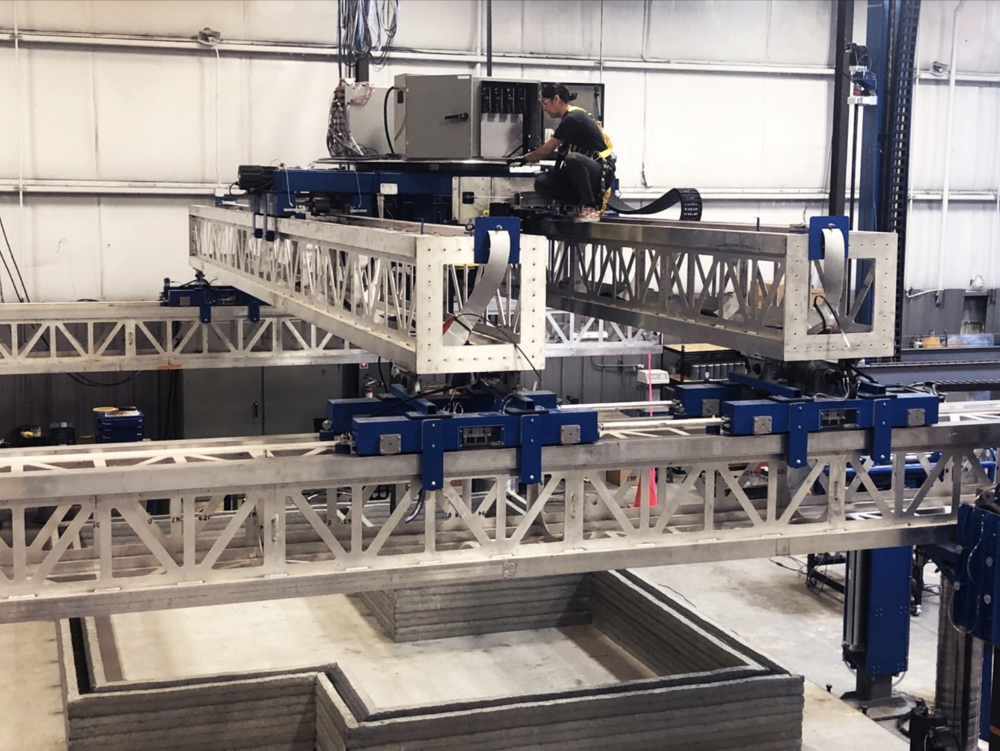

Robots automate construction
The main drivers for the development of construction robotics include:
- Labor scarcity
- The need for increased labor productivity - no human errors, no changing shifts
- The need for increased labor efficiency
- Safety
- Lower material costs and waste
- Greater capital efficiency: faster construction cycle and sales, giving access to capital quicker
From our portfolio company Diamond Age, we note, “Diamond Age is solving for labor, the unintended consequence from the great recession of 2008. The production housing industry (tract developments) effectively stopped building homes from 2008 – 2011. This extended recovery forced 1.5MM workers to leave the industry and make a living either upstream in commercial construction or in an entirely different industry. The metric the industry uses to determine how many new homes to build every year is the new household formation number from census data. This number has been very consistent for the past decade indicating we should be building 1.2MM new single-family residences every year. Because of the massive labor shortage left over from the great recession the industry is only building 50-60% of this demand – leaving the U.S. 4.5MM homes short of demand over the 12-year aggregate. The street value of this shortfall is $2 trillion dollars.”
Image credit: Diamond Age
You can read more about the enablers that lead to this in Why We Invested in Diamond Age, or visit this Techcrunch article about the company.